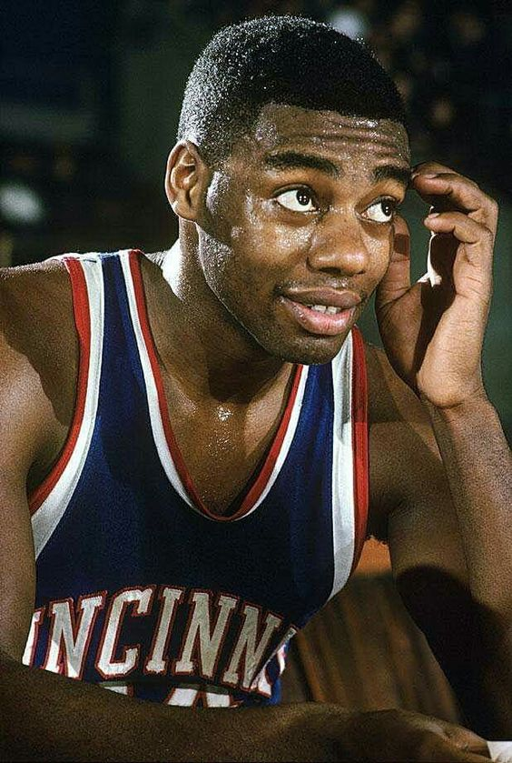

Oscar Robertson
Oh jeez, this guy. While I’m too young to have ever seen him play, his statistics are so mind-blowing that
I wish I had a time machine for the express purpose of going back and seeing him in action. During the
1961–62 season, “The Big O” averaged a triple-double with 30.8 points, 12.5 rebounds, and 11.4 assists
per game. Oh, and the 12-time All-Star also helped initiate true free agency into the NBA through a
landmark antitrust suit, an accomplishment just as impressive as his jaw-dropping on-court exploits.
